| INTRODUCCIÓN | {{PAG:introduccion}} |
| Arquitectura cliente-servidor | {{PAG:arquitectura}} |
| Sockets TCP/IP | {{PAG:sockets}} |
| Sistema manejador de bases de datos | {{PAG:dbms}} |
| Lenguaje SQL | {{PAG:sql}} |
| OBJETIVOS | {{PAG:objetivos}} |
| DESARROLLO | {{PAG:desarrollo}} |
| Estructura del proyecto | {{PAG:estructura}} |
| Constantes compartidas | {{PAG:protocolo}} |
| Funciones de apoyo | {{PAG:util}} |
| Servidor | {{PAG:servidor}} |
| Cliente | {{PAG:cliente}} |
| Manejo de la tabla | {{PAG:tabla}} |
| Intérprete de comandos SQL | {{PAG:interprete}} |
| Makefile | {{PAG:makefile}} |
| RESULTADOS | {{PAG:resultados}} |
| CONCLUSIONES | {{PAG:conclusiones}} |
| BIBLIOGRAFÍA Y FUENTES | {{PAG:bibliografia}} |
Un sistema manejador de bases de datos (DBMS por sus siglas en inglés) es un programa que se encarga de guardar, consultar y modificar información de forma organizada. El usuario no trabaja directamente con los archivos en disco, sino que le envía instrucciones al manejador y éste se encarga de leer o escribir los datos y de regresar el resultado.
En este proyecto se construye un manejador sencillo en el que la base de datos tiene una sola tabla, guardada en un archivo de texto, y en el que el manejador se divide en dos programas que corren en computadoras distintas: un servidor, que tiene el archivo y ejecuta las instrucciones, y un cliente, que se conecta al servidor a través de la red para enviarle las instrucciones y mostrar las respuestas.
La arquitectura cliente-servidor es una forma de organizar una aplicación en dos partes que se comunican por medio de una red:
Con esta organización varios clientes pueden usar el mismo servicio al mismo tiempo desde diferentes máquinas, y los datos se mantienen en un solo lugar. Para que el servidor pueda atender a varios clientes a la vez, en este proyecto se crea un proceso hijo por cada cliente que se conecta, de modo que cada conversación se lleva por separado.
Un socket es el mecanismo que ofrece el sistema operativo para que dos programas se comuniquen a través de la red. Para el programa, un socket se maneja como un descriptor de archivo: se le escriben bytes con send y se le leen bytes con recv.
Los sockets de este proyecto son de la familia AF_INET, es decir, utilizan direcciones IP versión 4, y son de tipo SOCK_STREAM, es decir, utilizan el protocolo TCP. TCP es un protocolo orientado a conexión: antes de intercambiar datos, cliente y servidor establecen una conexión, y durante ella TCP garantiza que los bytes lleguen completos y en orden. A cambio, TCP no conserva los límites de cada mensaje; lo que se envía con varias llamadas a send puede llegar en una sola llamada a recv o repartido en varias. Por eso la aplicación necesita definir cómo se separa un mensaje del siguiente.
Las funciones que se utilizan en cada lado son las siguientes:
| Servidor | Cliente |
|---|---|
socket crea el socket | socket crea el socket |
bind lo asocia a una dirección y un puerto | gethostbyname obtiene la dirección del servidor |
listen lo pone a esperar conexiones | connect se conecta al servidor |
accept acepta a un cliente y regresa un nuevo socket | send y recv intercambian datos |
send y recv intercambian datos | close cierra la conexión |
close cierra la conexión |
Un detalle importante es el orden de los bytes. Los números de puerto se guardan en la estructura de dirección en orden de red, que es el byte más significativo primero. La función htons convierte un número del orden de la máquina al orden de red, y ntohs hace la conversión inversa.
Un manejador de bases de datos organiza la información en tablas. Una tabla está formada por columnas, que son los campos que tiene cada dato, y por registros, que son los renglones con los valores. En este proyecto la tabla es Alumno y tiene las columnas Id, Nombre, Apellido, Semestre y Carrera.
Para simplificar, la tabla se representa con un archivo de texto llamado alumno.txt. La primera línea del archivo es la cabecera con los nombres de las columnas y cada línea siguiente es un registro. Los campos se separan con una coma:
Id,Nombre,Apellido,Semestre,Carrera 1,Juan,Perez,5,Computacion 2,Anita,Lopez,8,Electronica
La columna Id es la llave primaria: identifica a cada registro de forma única, no se repite y no puede modificarse. Además es autoincremental, lo que quiere decir que el manejador la asigna de forma automática al insertar un registro, tomando el Id más grande que existe y sumándole uno.
SQL es el lenguaje con el que se le dan instrucciones a un manejador de bases de datos. El proyecto implementa los cuatro comandos básicos para consultar y modificar una tabla, más un comando propio para cerrar la conexión:
| Comando | Ejemplo | Qué hace |
|---|---|---|
| SELECT | SELECT * FROM Alumno | Regresa todos los registros de la tabla |
| INSERT | INSERT INTO Alumno VALUES (Jose,Sanchez,9,Telecom) | Agrega un registro nuevo |
| UPDATE | UPDATE Alumno SET Apellido=Gomez WHERE Id=2 | Modifica los registros que cumplen la condición |
| DELETE | DELETE FROM Alumno WHERE Id=2 | Elimina los registros que cumplen la condición |
| SALIR | SALIR | Cierra la conexión con el servidor |
Como lo permite el enunciado, el punto y coma al final del comando es opcional y los valores de texto no necesitan ir entre comillas.
El alumno construirá un sistema manejador de bases de datos con arquitectura cliente-servidor, programado en lenguaje C sobre Linux, en el que el cliente se conecte de forma remota al servidor mediante sockets TCP/IP, le envíe comandos SQL y el servidor los ejecute sobre un archivo que simula una tabla.
Objetivos particulares:
El proyecto se organizó en varios archivos para separar la parte de red de la parte que maneja los datos. Cada archivo tiene una responsabilidad:
| Archivo | Contenido |
|---|---|
| src/protocolo.h | Constantes que comparten cliente y servidor |
| src/util.h, src/util.c | Funciones de apoyo para cadenas |
| src/servidor.c | Servidor TCP, un proceso hijo por cliente |
| src/cliente.c | Cliente TCP interactivo |
| src/tabla.h, src/tabla.c | Lectura y escritura de la tabla en el archivo |
| src/sql.h, src/sql.c | Intérprete de los comandos SQL |
| datos/alumno.txt | La tabla Alumno |
| Makefile | Compilación de los dos programas |
La comunicación entre cliente y servidor sigue dos reglas sencillas. El cliente envía un comando por línea, terminado con un salto de línea. El servidor responde con texto de cualquier longitud y marca el final de la respuesta con el carácter 0x04. De esta forma, aunque TCP entregue los datos en pedazos, cada lado sabe dónde termina lo que está leyendo.
El desarrollo se llevó en un repositorio de git con una rama por cada parte: servidor, cliente, SELECT y los comandos INSERT, UPDATE y DELETE. Cada rama se integró a la rama principal cuando quedó terminada.
El archivo protocolo.h define los valores que ambos programas necesitan conocer: el puerto por omisión, el tamaño máximo de un comando y de una respuesta, el carácter que marca el fin de una respuesta y la palabra con la que se cierra la sesión.
{{CODIGO:src/protocolo.h}}En util.c hay dos funciones que se usan en varias partes. recortar_cadena elimina los espacios y saltos de línea que hay al inicio y al final de una cadena; se usa para limpiar lo que escribe el usuario y cada campo que se lee del archivo. quitar_comillas elimina las comillas que encierran un valor, para que el usuario pueda escribir Gomez o 'Gomez' indistintamente.
El servidor se encuentra en servidor.c. Recibe como argumento el puerto en el que va a escuchar; si no se indica, usa el 4898. Al inicio se incluyen las cabeceras de sockets y los archivos propios del proyecto.
{{CODIGO:src/servidor.c:1-23}}Las dos primeras funciones se encargan de enviar datos. enviar_todo llama a send en un ciclo hasta que se hayan enviado todos los bytes, porque una sola llamada puede enviar menos de los que se le piden. enviar_respuesta envía el texto de la respuesta y después el carácter de fin, que es la señal para que el cliente deje de leer.
recibir_linea lee el comando que envía el cliente. Se lee un byte a la vez hasta encontrar el salto de línea, para no tomar por error el inicio del siguiente comando. La función regresa el número de bytes leídos, cero si el cliente cerró la conexión y menos uno si hubo un error.
{{CODIGO:src/servidor.c:50-72}}atender_cliente es la conversación completa con un cliente y se ejecuta dentro del proceso hijo. En cada vuelta del ciclo se recibe un comando, se imprime en la terminal del servidor junto con la IP del cliente, y se revisa si es SALIR. Si lo es, se envía una despedida y termina el ciclo. Si no, el comando se pasa a sql_procesar, que arma la respuesta, y ésta se envía al cliente.
{{CODIGO:src/servidor.c:74-111}}La función principal sigue la secuencia típica de un servidor TCP. Primero se crea el socket con socket y se activa la opción SO_REUSEADDR para poder reiniciar el servidor sin esperar a que el puerto se libere. Después se llena la estructura sockaddr_in con la familia AF_INET, la dirección INADDR_ANY para aceptar conexiones por cualquier interfaz y el puerto convertido a orden de red con htons. Con bind se asocia el socket a esa dirección y con listen se pone a escuchar.
La llamada a signal con SIGCHLD hace que el sistema operativo recoja de manera automática a los procesos hijos cuando terminan, para que no queden procesos zombie.
En el ciclo principal, accept se bloquea hasta que llega un cliente y regresa un nuevo descriptor para hablar con él. Se imprime la fecha, la hora y la IP del cliente, que se obtiene con inet_ntoa. Enseguida se llama a fork: el proceso hijo cierra el socket de escucha, atiende al cliente y termina; el proceso padre cierra el descriptor del cliente y regresa a accept para esperar al siguiente. Así, cada cliente tiene su propio proceso y varios pueden estar conectados al mismo tiempo.
El cliente se encuentra en cliente.c. Recibe como argumentos la dirección IP o el nombre del servidor y, de forma opcional, el puerto.
{{CODIGO:src/cliente.c:1-20}}La función enviar_todo es la misma que en el servidor. recibir_respuesta lee del socket en un ciclo e imprime en pantalla lo que va llegando. En cada bloque recibido busca el carácter de fin de respuesta; si lo encuentra, imprime lo que había antes de él y termina. Si recv regresa cero es que el servidor cerró la conexión.
En la función principal se crea el socket, se obtiene la dirección del servidor con gethostbyname, que acepta tanto una IP como un nombre, y se copia a la estructura sockaddr_in junto con el puerto en orden de red. Con connect se establece la conexión.
Después viene el ciclo de la conversación. El cliente muestra el indicador SQL>, lee una línea del teclado, le quita los espacios sobrantes y la envía al servidor con un salto de línea al final. Enseguida espera la respuesta completa y la muestra. Si el comando fue SALIR, después de recibir la despedida se cierra el socket y el programa termina. Las líneas vacías no se envían y la combinación Ctrl-D se trata como SALIR para no dejar la conexión abierta.
El archivo tabla.h define cómo se representa una tabla en memoria. Un Registro es un arreglo de campos de texto y una Tabla guarda el nombre, la ruta del archivo, los nombres de las columnas y un arreglo de registros. También se declaran las constantes con los límites del proyecto: hasta 8 columnas, 1000 registros y 64 caracteres por campo.
{{CODIGO:src/tabla.h}}En tabla.c está la lógica para pasar del archivo a la memoria y de regreso. La idea general es cargar la tabla completa en memoria, trabajar ahí y, si hubo cambios, reescribir el archivo entero. Como el servidor crea un proceso por cliente, dos procesos podrían escribir el archivo al mismo tiempo; para evitarlo, mientras una tabla está cargada su archivo se bloquea con flock: con bloqueo compartido si solo se va a leer y con bloqueo exclusivo si se va a modificar.
tabla_dividir_campos recorre una línea buscando comas y copia cada pedazo como un campo, quitándole los espacios. Se usa para la cabecera, para cada registro y también para la lista de valores del INSERT. nombre_valido revisa que el nombre de la tabla solo tenga letras, dígitos y guion bajo, de modo que no se pueda abrir un archivo fuera de la carpeta de datos.
{{CODIGO:src/tabla.c:1-52}}tabla_cargar forma la ruta del archivo con el nombre de la tabla en minúsculas, por ejemplo Alumno se convierte en datos/alumno.txt. Abre el archivo en modo lectura o en modo lectura y escritura según se pida, lo bloquea, reserva memoria para los registros y lee la primera línea como cabecera. Después lee cada línea siguiente como un registro, ignorando las líneas vacías. Si algo falla, deja un mensaje en el parámetro error y regresa menos uno.
tabla_guardar vacía el archivo con ftruncate y vuelve a escribir la cabecera y todos los registros, separando los campos con coma. tabla_liberar quita el bloqueo, cierra el archivo y libera la memoria. tabla_indice_columna busca una columna por nombre sin distinguir mayúsculas y tabla_siguiente_id busca el Id más grande y le suma uno, que es el valor que recibe el siguiente registro insertado.
El archivo sql.c contiene una función por cada comando y una función de entrada que decide a cuál llamar. Todas reciben el comando y el buffer donde se arma la respuesta. La función agregar escribe texto con formato al final de la respuesta cuidando no pasarse del tamaño del buffer.
{{CODIGO:src/sql.h}} {{CODIGO:src/sql.c:1-29}}Las siguientes funciones son de apoyo para analizar los comandos. buscar_palabra localiza una palabra clave como VALUES, SET o WHERE sin distinguir mayúsculas y verificando que sea una palabra completa. copiar_entre copia el pedazo de comando que hay entre dos posiciones, por ejemplo lo que está entre SET y WHERE. separar_asignacion parte una expresión de la forma columna=valor en sus dos partes. cumple_condicion compara el campo de un registro con el valor de la condición WHERE.
{{CODIGO:src/sql.c:31-87}}sql_select espera exactamente cuatro palabras: SELECT, un asterisco, FROM y el nombre de la tabla. Carga la tabla en modo lectura y copia a la respuesta la cabecera y después cada registro, con el mismo formato que tiene el archivo. Por eso el cliente muestra el listado tal como está en alumno.txt.
sql_insert revisa que el comando empiece con INSERT INTO y el nombre de la tabla, localiza la palabra VALUES y toma el texto que hay entre el paréntesis que abre y el que cierra. Ese texto se separa por comas y a cada valor se le quitan las comillas si las tiene. Después se carga la tabla en modo escritura y se verifica que el número de valores sea igual al número de columnas menos uno, porque el Id no se envía. Se forma el registro nuevo con el Id que regresa tabla_siguiente_id, se agrega al final y se guarda el archivo. La respuesta indica el Id que recibió el registro.
{{CODIGO:src/sql.c:122-211}}sql_update localiza las palabras SET y WHERE; las dos son obligatorias, para no modificar toda la tabla por accidente. El texto entre SET y WHERE son las asignaciones, que pueden ser varias separadas por coma, y el texto después de WHERE es la condición. Se carga la tabla, se verifica que todas las columnas existan y se rechaza el comando si alguna asignación intenta cambiar la primera columna, que es el Id. Después se recorren los registros y a los que cumplen la condición se les copian los valores nuevos. Si ningún registro cumplió, se responde con un error y el archivo no se toca; si hubo cambios, se guarda y se responde cuántos registros se actualizaron.
{{CODIGO:src/sql.c:213-320}}sql_delete funciona de forma parecida. Localiza WHERE, obtiene la condición y carga la tabla. Para eliminar registros se recorre el arreglo con dos índices: los registros que no cumplen la condición se van copiando hacia adelante y los que sí cumplen se dejan fuera. Al final el número de registros se reduce y se guarda el archivo. Los Id de los registros restantes no se vuelven a numerar, porque el Id es la llave primaria y debe mantenerse estable.
{{CODIGO:src/sql.c:322-394}}sql_procesar es la función que llama el servidor. Hace una copia del comando, le quita los espacios y el punto y coma final si lo hay, y lee la primera palabra. Según esa palabra llama a la función del comando correspondiente; si no es ninguna de las conocidas, responde que el comando no se reconoce.
{{CODIGO:src/sql.c:396-429}}El Makefile compila los dos programas con las advertencias activadas. make genera bin/servidor y bin/cliente, y make clean borra los binarios.
Las pruebas se realizaron con dos máquinas virtuales de Ubuntu en VirtualBox, conectadas en modo de adaptador puente para que cada una tuviera su propia dirección IP en la red local. La máquina servidor recibió la dirección 192.168.100.102 y la máquina cliente la dirección 192.168.100.100.
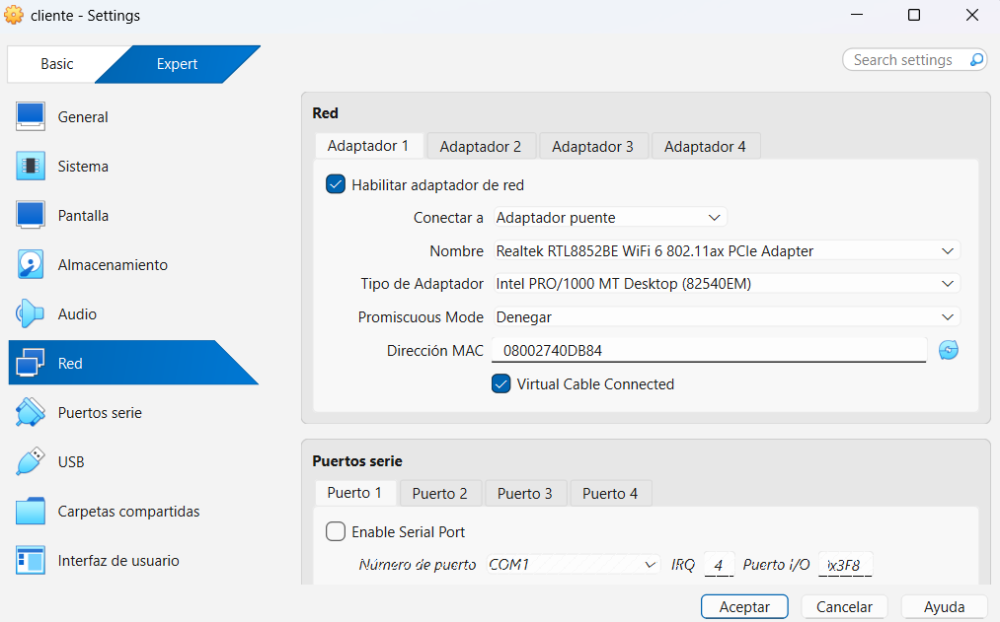
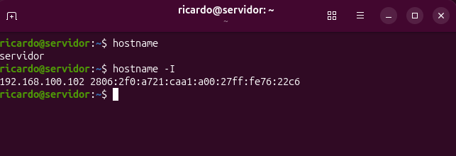
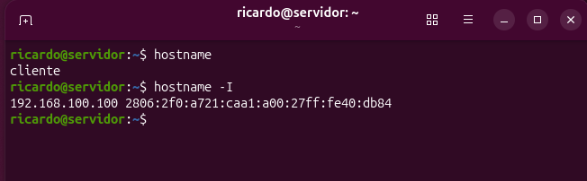
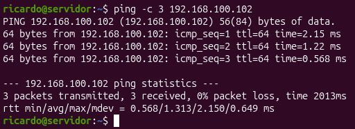
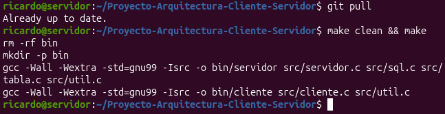
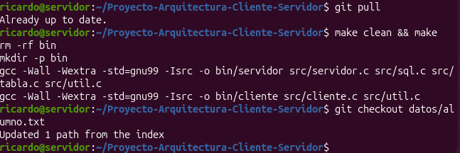
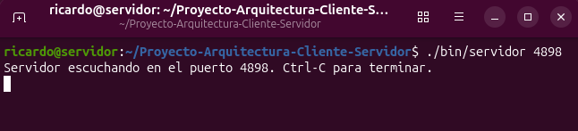
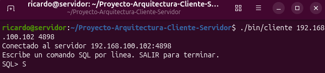
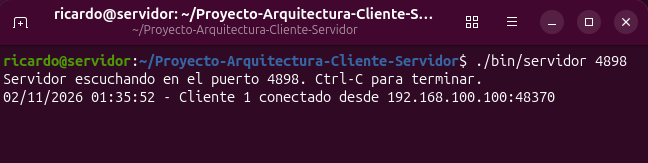
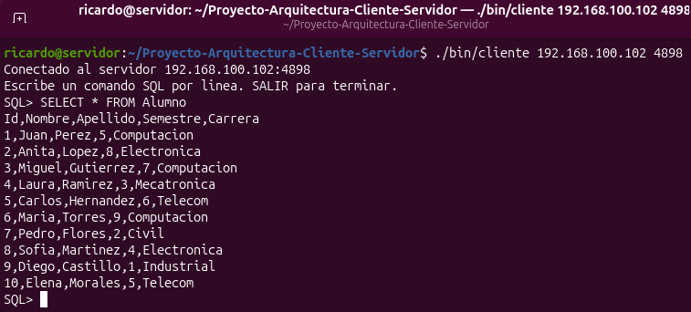
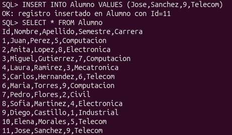
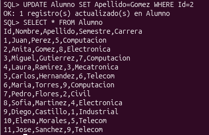
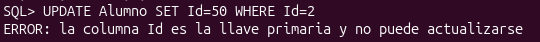
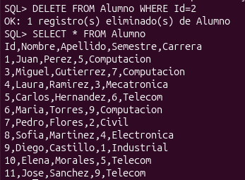
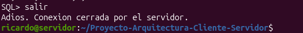
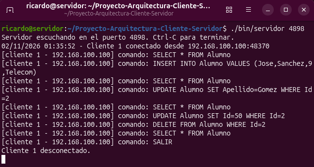
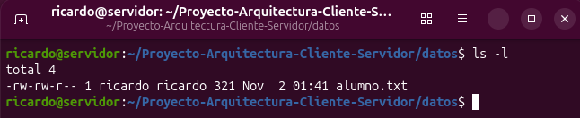
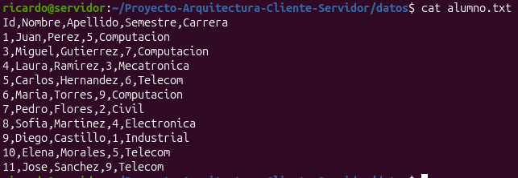
Arreola Santander Ricardo
Para resolver el proyecto se construyeron dos programas en C que se comunican por sockets TCP: un servidor que guarda la tabla en un archivo de texto y ejecuta los comandos, y un cliente que se conecta desde otra máquina para enviarlos. Al hacerlo se vio en la práctica la secuencia de llamadas de un servidor, que crea el socket, lo asocia a un puerto, escucha y acepta conexiones, y la del cliente, que resuelve la dirección y se conecta.
Un punto que resultó importante fue que TCP entrega un flujo de bytes y no mensajes separados, por lo que fue necesario acordar un formato: un comando por línea del lado del cliente y un carácter de fin de respuesta del lado del servidor. También se comprobó la utilidad de crear un proceso por cada cliente con fork, lo que permite atender varias conexiones a la vez, y la necesidad de bloquear el archivo para que dos procesos no lo escriban al mismo tiempo.
Con las pruebas entre dos máquinas virtuales se verificó que los cuatro comandos SQL funcionan sobre el archivo, que la columna Id se asigna de forma automática y no puede modificarse, y que el comando SALIR cierra la conexión de forma ordenada. El proyecto permitió unir en una sola aplicación los temas de procesos, sockets y manejo de archivos en Linux.
• Román Zamitiz, C. A. Arquitectura Cliente-Servidor. Tema 3: Sockets Internet en lenguaje C. Facultad de Ingeniería, UNAM. Accedido el 1 de noviembre de 2026 de http://profesores.fi-b.unam.mx/carlos/acs/Tema-03-Sockets-INTERNET-C/index.html
• The Open Group. The Open Group Base Specifications Issue 6, IEEE Std 1003.1. Accedido el 1 de noviembre de 2026 de https://pubs.opengroup.org/onlinepubs/009696799/idx/index.html
• Stevens, W. R., Rago, S. A. Advanced Programming in the UNIX Environment, 3a edición, editorial Addison-Wesley, 2013. Referencia para el manejo de procesos, archivos y sockets en sistemas UNIX.
• Tanenbaum, A. S., Bos, H. Sistemas Operativos Modernos, 4a edición, editorial Pearson, 2016. Referencia para los conceptos de procesos y comunicación entre ellos.
• Kernighan, B. W., Ritchie, D. M. El lenguaje de programación C, 2a edición, editorial Prentice Hall, 1991.